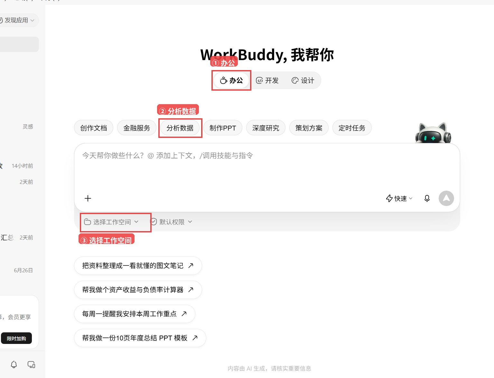
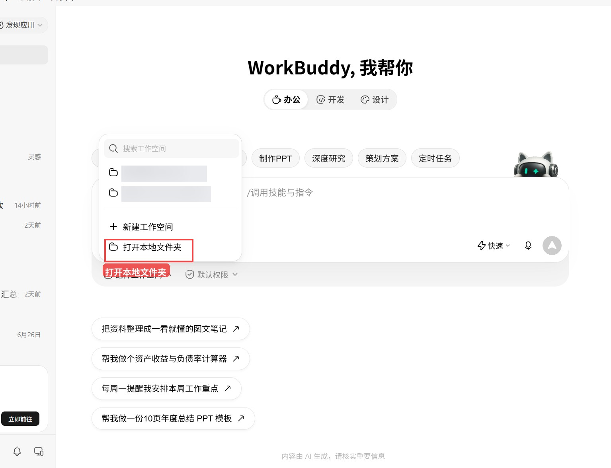
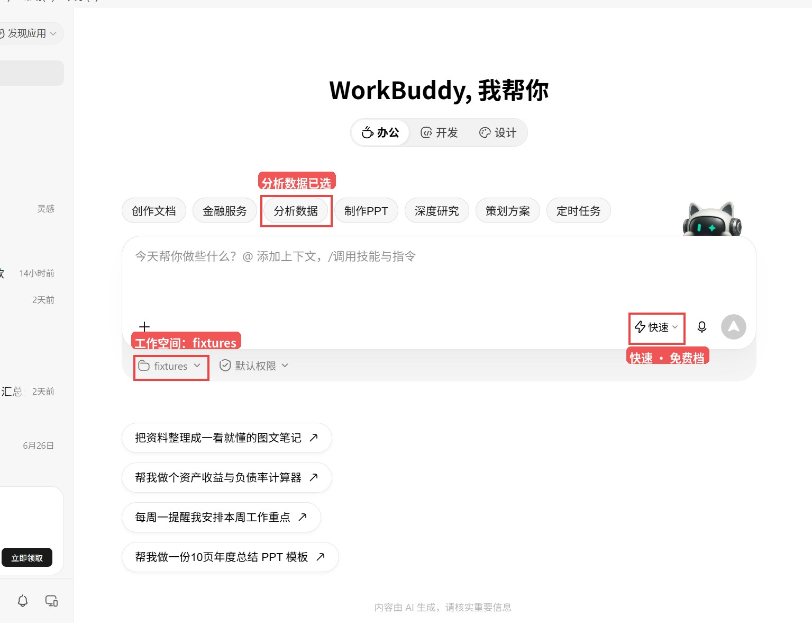
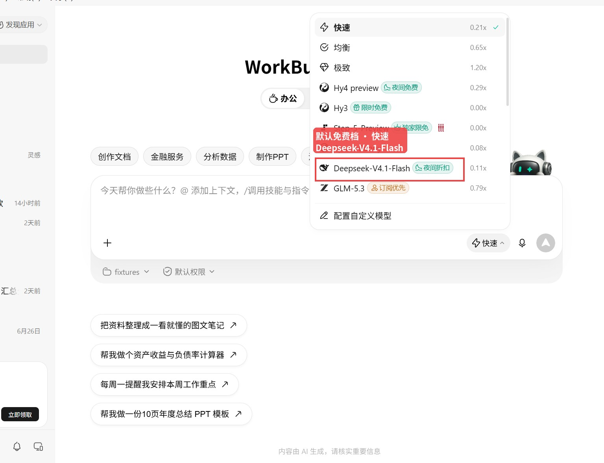
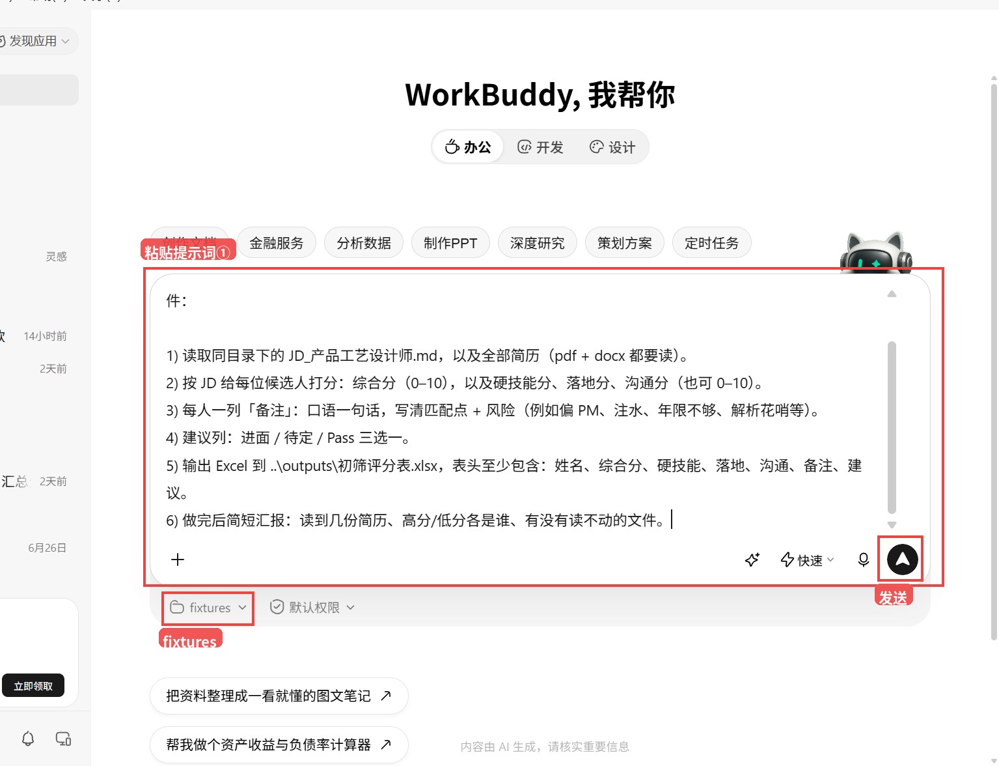
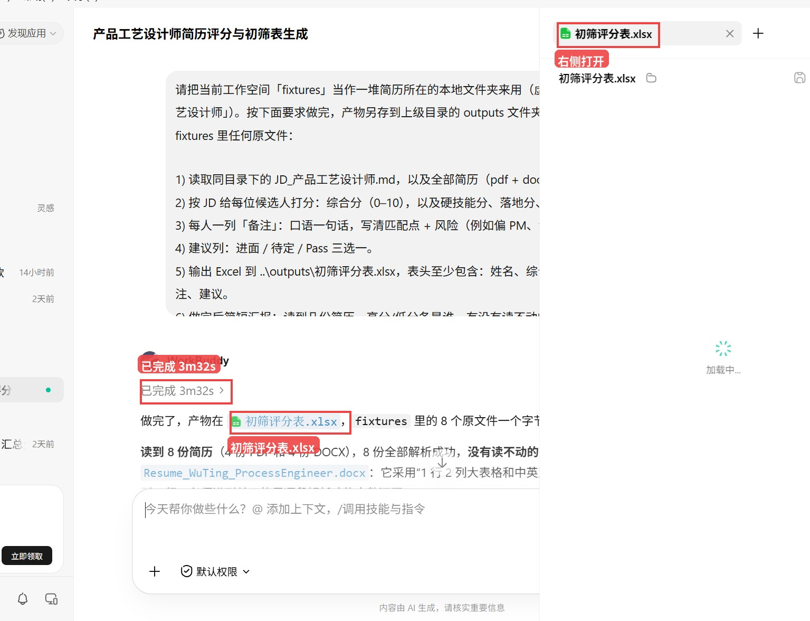
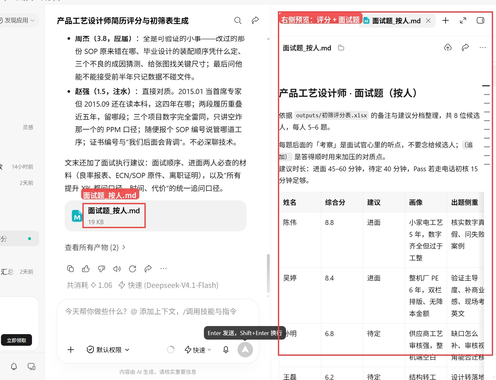
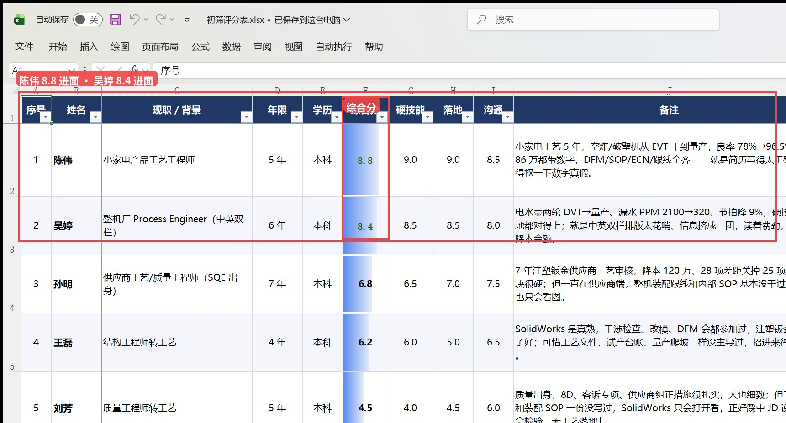
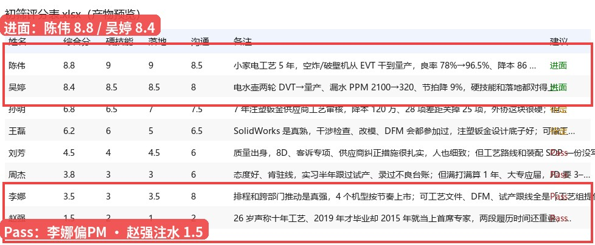

正文
朋友那边招产品工艺设计师，桌面文件夹里 PDF、Word 混着投过来，项目经理同事也掺和进来翻——谁该进面、谁是注水、谁其实是纯项目经理转岗，翻两页就吵起来了。我说：别一张张点开硬看，把整文件夹丢进 WorkBuddy，按 JD 打分、写备注、顺手出面试题。
今晚用的是示例简历（公司名：演示科技，只做演示）。你完全可以换成自己公司收集的真实简历，授权对应文件夹就行。免费档就能跑。结论先放前头：授权文件夹后，两条提示词合计约 5 分 10 秒，8 份简历全读通，交出来 初筛评分表.xlsx 和 面试题_按人.md（8 人共 42 题）。原简历一个没动。
下面按真实点击顺序带你走一遍。每一步：对照红框截图 → 该粘的提示词整段复制。模型用界面上的「快速」，对应免费档 快速 (Deepseek-V4.1-Flash)——用截图红框认，不用额外点什么灰底字段条。
—第 1 步：先把示例简历文件夹备好—
【要做什么】
在电脑上建一个文件夹，把 JD 和简历（PDF/Word 都行）丢进去。本稿用的是演示科技示例包：1 份 JD + 8 份示例简历。你完全可以换成自己公司收集的真实简历夹。

示例：fixtures 里 JD + 8 份示例简历（PDF/Word 混投，演示科技）
【文件夹路径 · 可复制】
文件夹名：fixtures。完整路径示例：
C:\Users\laoli\projects\workbuddy-resume-screen\fixtures
放桌面或「我的文档」也行，记清文件夹名即可。产物会写到上级的 outputs，不会覆盖原简历。
—第 2 步：打开 WorkBuddy，授权整个文件夹—
装好并打开 WorkBuddy V5.8.3。顶栏点 办公 → 再点 分析数据。然后走入口：选择工作空间 → 打开本地文件夹，选中刚才的 fixtures。

真屏摄：红框①办公 · ②分析数据 · ③选择工作空间

真屏摄：红框＝下拉菜单里的「打开本地文件夹」

真屏摄：红框＝工作空间芯片「fixtures」；模型条「快速 · 免费档」；分析数据已选
输入框下方文件夹名变成 fixtures 才算选对。系统弹窗地址栏也可以直接贴完整路径再回车。
—第 3 步：确认免费档「快速」模型—
看输入框右下角模型条。默认免费档选 快速 即可，条目标签是 快速 (Deepseek-V4.1-Flash)。对照下图红框，点开菜单确认勾在「快速」上。

真屏摄：红框＝默认免费档 · 快速（Deepseek-V4.1-Flash）
【广告位1】
—第 4 步：提示词① —— 出评分表—
把下面灰底框整段复制进聊天输入框，点发送。它会读 JD + 全部简历，按分档写 Excel。

真屏摄：红框＝粘贴提示词① · 工作空间 fixtures · 发送
【提示词① · 完整复制】
请把当前工作空间「fixtures」当作一堆简历所在的本地文件夹来用（示例数据，演示科技招「产品工艺设计师」；你也可用公司真实简历夹）。按下面要求做完，产物另存到上级目录的 outputs 文件夹（即 ..\outputs\），不要改 fixtures 里任何原文件： 1) 读取同目录下的 JD_产品工艺设计师.md，以及全部简历（pdf + docx 都要读）。 2) 按 JD 给每位候选人打分：综合分（0–10），以及硬技能分、落地分、沟通分（也可 0–10）。 3) 每人一列「备注」：口语一句话，写清匹配点 + 风险（例如偏 PM、注水、年限不够、解析花哨等）。 4) 建议列：进面 / 待定 / Pass 三选一。 5) 输出 Excel 到 ..\outputs\初筛评分表.xlsx，表头至少包含：姓名、综合分、硬技能、落地、沟通、备注、建议。 6) 做完后简短汇报：读到几份简历、高分/低分各是谁、有没有读不动的文件。
（「提示词」= 你打给软件看的那段说明。把上面灰底框里的字整段复制，粘到聊天输入框里即可。）
实测大约 3 分 32 秒跑完。8 份全解析成功（4 PDF + 4 DOCX），吴婷那份双栏英文排版它也啃下来了。产物写到上级 outputs\初筛评分表.xlsx。

真屏摄：红框＝已完成 3m32s · 产物初筛评分表.xlsx · 右侧打开评分表
—第 5 步：提示词② —— 按人出面试题—
评分表在手里之后，再贴第二段。它会按备注与分档，给每人约 5 道题。
【提示词② · 完整复制】
基于刚才写出的 ..\outputs\初筛评分表.xlsx 里的备注与分档，为每位候选人写约 5 道面试题，存到 ..\outputs\面试题_按人.md。 要求： - 按人分节（用姓名作标题） - 针对画像差异出题：PM 转岗多问工艺闭环与跟线证据；注水简历多问细节对质与任职时间线；应届/浅资历多问可培养点与学习迁移；结构/质量转岗多问缺口补齐方式 - 题干具体，避免空泛「请介绍自己」 - 不要改 fixtures 原文件，也不要改评分表
（「提示词」= 你打给软件看的那段说明。把上面灰底框里的字整段复制，粘到聊天输入框里即可。）
实测大约 1 分 38 秒。交出来 面试题_按人.md：8 人共 42 题，按人分节，题干具体（注水的对质时间线，偏 PM 的追问跟线证据）。

真屏摄：红框＝面试题_按人.md · 右侧评分表+面试题预览
—第 6 步：打开 Excel，看分档—
在 C:\Users\laoli\projects\workbuddy-resume-screen\outputs 里双击 初筛评分表.xlsx（桌面/资源管理器按文件名找也行）。点名看三个锚点：
• 陈伟 8.8 / 进面——小家电工艺闭环，良率、降本都带数字，简历写得太工整，面试得抠真假；
• 赵强 1.5 / Pass——26 岁自称十年、任职重叠、项目雷同，标准注水；
• 李娜 3.5 / Pass——排程沟通很强，但工艺全外包，纯项目经理转岗。

真屏摄：红框＝陈伟/吴婷进面档与综合分列（赵强注水在表底）
【请插入配图】
产物预览：进面陈伟 8.8 / 吴婷 8.4；Pass 含李娜偏 PM、赵强注水 1.5
【广告位2】
—这趟还要知道的几点—
① 吴婷综合分偏高（8.4 进面）——造料时她是「中·花哨」档：内容硬，但双栏花哨、没写降本金额。模型认得出排版费劲，实质技能分仍给到进面；若你严格想把「花哨」降权，期望落在待定更贴。这趟没重跑。
② PDF 首轮不能直接当文本读——它先踩到二进制，再装解析库、写提取脚本，占掉提示词①前半时间；整体 3 分 32 秒仍可接受。
③ 李娜 3.5 对「沟通强可观察」略狠——偏 PM 认对了，分压到明确 Pass。
④ 本稿是示例简历演示，分档只说明流程；你这边用公司真实简历时，把投递夹授权进去，并把 JD、提示词里的岗位名改成你们的即可。
—一句话：整文件夹丢进去，先出分再约面—
WorkBuddy 5.8.3 + 免费档「快速 (Deepseek-V4.1-Flash)」，演示科技这 8 份示例简历：选择工作空间 → 打开本地文件夹授权 fixtures，两条提示词合计约 5 分钟，评分表 + 按人面试题齐活。朋友那边项目经理再掺和，至少先有一版带备注的分档表可以吵。你要是也在被 PDF/Word 混投淹没，值得按上面步骤试一趟。
关注公众号
老李的AI江湖
供应链老登的 AI 江湖，专聊能上手的
点关注顺手转发点个赞
下期见
WorkBuddy 简历初筛 产品工艺设计师 文件夹授权 评分表 面试题 老李的AI江湖